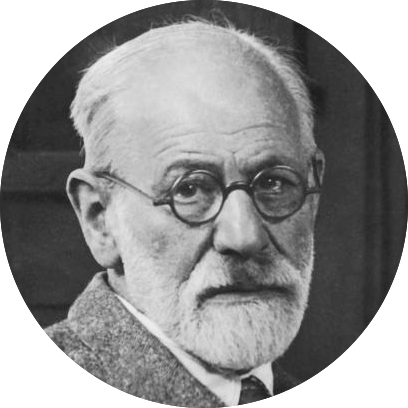
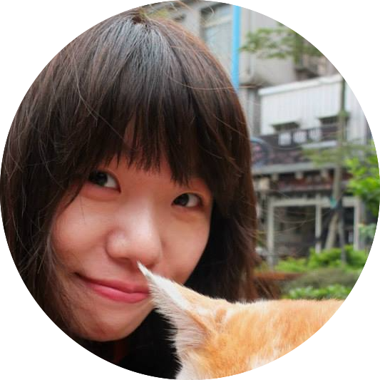
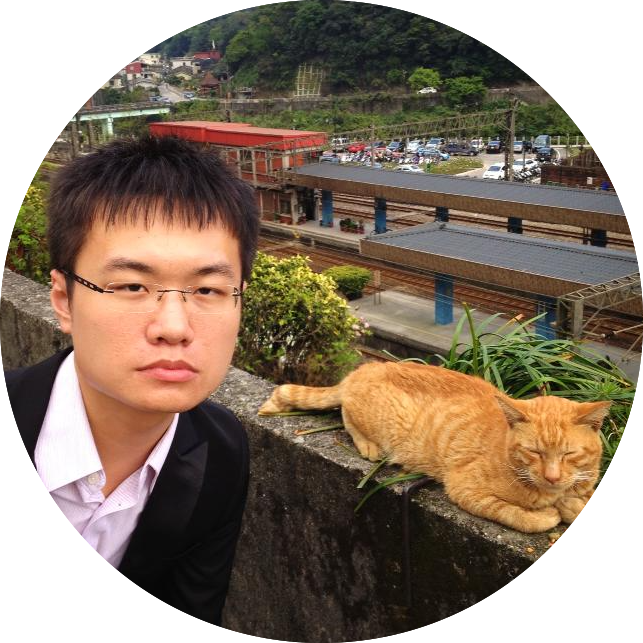

Joshua Goh Oon Soo吳恩賜
Principal Investigator
Josh is the Principal Investigator of the Brain and Mind Laboratory at the Graduate Institute of Brain and Mind Sciences, National Taiwan University. He continues to work on better understanding of the human brain and mind, and how they are
affected by biological and experiential factors. Specifically, his interests include the cognitive neuroscience of aging, individual differences and cross-cultural neuroscience, and decision-making.
joshuagoh@ntu.edu.tw
+886-2312-3456#88022
+886-2312-3456#88022

Yu-Shiang Su蘇煜翔
Doctoral Students
I am too shy to introduce myself.

Yi-Chun Chen陳怡均
Master’s Students
I am too shy to introduce myself.
Co-advisor:
Prof. Chia-Lin Lee
Prof. Chia-Lin Lee
Chun-Yi Li李俊毅
Master’s Students
My project focuses on using MRI methodology to evaluate neural mechanisms underlying ADHD decision processing.
Co-advisor
Prof. Susan Gau
Prof. Susan Gau
Hsin-Yi Hong洪幸儀
Master’s Students
I am too shy to introduce myself.
Zhe-Yu Zhou周哲宇
Master’s Students
I am too shy to introduce myself.
Wan-Rue Lin林宛儒
Master’s Students
I am too shy to introduce myself.
Yu-Xuan Kao高鈺軒
Master’s Students
I am too shy to introduce myself.
Prof. Susan Gau

Yu-Zhen Tu涂玉臻
Research Coordinators
My research interest is in the relationship between empathy and normal aging, the neural mechanisms involved, and their possible use as an indicator for dementia of the Alzheimer’s type. At the same time, I am a licensed medical technologist
in Taiwan.
Wan-Lun Hsieh謝宛倫
Research Coordinators
I am too shy to introduce myself.
I-Tzu Hong洪一慈
Research Coordinators
I am too shy to introduce myself.
Yun-Shiuan Chuang莊昀軒
Research Assistants
I am too shy to introduce myself.